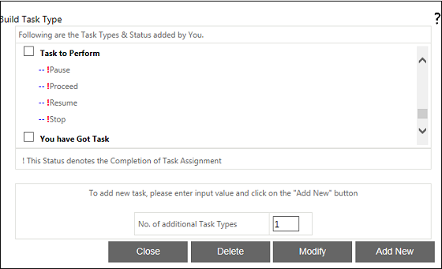
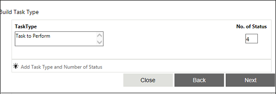
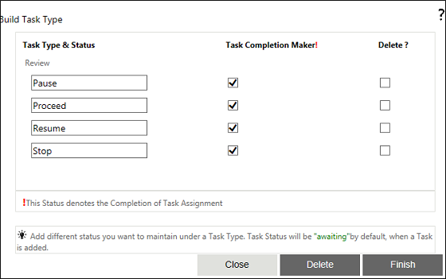

No
Task Type Property Window
You can add the task types and the corresponding status in this property window. To open this window, click the button for the 'Select Task Type' property.
The window shown in the image below is used to Add, Edit and View the Task Types added for the Task activity. This is the first window in the Select Task Type property user-interface. It lists all the tasks that have been added for the task. Each task in the listing has a check box. You can use this to select the task for editing. The window has the No. of additional Task Types field to specify the number of questions to add. This window has the following buttons:

The window shown below is the second in the user-interface for adding task types for a task. This interface is displayed after the actor selects Add New or Modify from the first window shown above. You can add as many task types as were specified the first window and a separate row of fields is displayed for every new task type. For each task type, the following parameters can be set here:
This window has the following buttons:

The window shown below is the third in the user-interface for adding task types for a task. In this window, you can set the following parameters:
This window has the following buttons:

The first window is displayed again when you click Finish in the previous window. It shows the newly added tasks along with their status. You can modify or delete the new task or add a new task. If you do not wish to perform any more operations, click Close to exit this user interface.